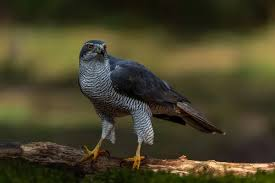

Neste site vocẽ encontra sobre 3 aves da África.
O bico-de-sapato (Balaeniceps rex), também conhecido como cegonha-cabeça-de-baleia e cegonha-de-bico-de-sapato, é uma ave pernalta de grande porte. Ele deriva seu nome de seu enorme bico em forma de sapato. Possui uma forma geral semelhante à de uma cegonha e já foi classificado com as cegonhas na ordem Ciconiiformes com base nesta morfologia. No entanto, evidências genéticas o colocam com os pelicanos e garças na ordem Pelecaniformes. O adulto é principalmente cinza, enquanto os juvenis são mais marrons. Ele vive na África Oriental tropical em grandes pântanos do Sudão do Sul à Zâmbia.
O bico-de-sapato é uma ave alta, com uma altura típica de 110 a 140 cm e alguns espécimes atingindo até 152 cm. O comprimento da cauda ao bico pode variar de 100 a 140 cm e a envergadura é de 230 a 260 cm. O peso varia de 4 a 7 kg. Um macho pesa em média cerca de 5,6 kg e é maior do que uma fêmea típica de 4,9 kg.
O bico-de-sapato (Shoebill) normalmente é silencioso, mas eles fazem exibições de barulho de bico no ninho. Ao se envolverem nessas exibições, pássaros adultos também emitem um mugido semelhante ao de uma vaca, bem como gemidos agudos.
O condor (Vultur gryphus) é uma ave da família dos catartídeos, parente próximo do condor-da-califórnia e dos urubus, que habita a Cordilheira Andina, na América do Sul. Ele é o símbolo nacional da Colômbia, Equador, Bolívia e Chile[1] e integra os brasões oficiais destes países,[2] além de cumprir um importante papel no folclore e na mitologia das regiões andinas da América do Sul. A IUCN considera o animal ameaçado de extinção,[3] por perda de habitat natural e envenenamento de carcaças deixadas por caçadores. Vários países criaram programas de reprodução em cativeiro da espécie.
O condor é a maior ave voadora do mundo e a que tem a terceira maior envergadura de asas, com 3,3 metros (perdendo somente para o Marabu, cuja envergadura de asas chega a 3,5 metros e para o Albatroz-errante que chega à mesma envergadura). Ele pode chegar a pesar 14 quilos e voar até 300 quilômetros por dia. Eles são capazes de voar por distâncias superiores a 170 quilômetros sem bater suas asas.
O açor africano é um Accipiter de médio a grande porte, principalmente cinza e ruivo, com o formato típico de asas largas e cauda longa de seu gênero. O adulto tem partes superiores cinzas que tendem a ser mais escuras nos machos do que nas fêmeas, as partes inferiores são esbranquiçadas marcadas com barras ruivas que são mais pronunciadas nos machos. A parte inferior da asa é ruiva clara, desbotando para branco em algumas aves e as penas de voo e cauda variam de marrom fuliginoso a cinza com barras cinza fracas acima, branco com barras cinza abaixo. O bico é preto, a cera é cinza-esverdeada, os olhos são amarelos e as pernas e pés são amarelos. Os juvenis são marrons acima com partes inferiores e flancos esbranquiçados que são fortemente manchados de marrom. As fêmeas pesam 270–510 g, enquanto os machos menores pesam 150–340 g. A envergadura é 1,7 vezes o comprimento total da ave e 440–570 mm nos machos e 540–700 mm nas fêmeas.
